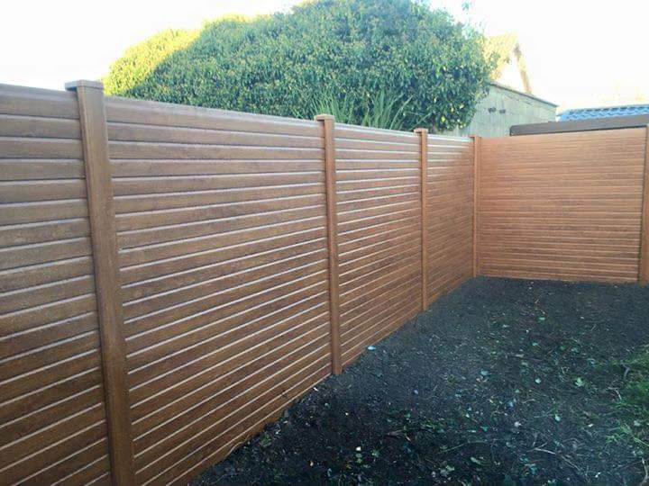

Home / Blog
Blog
Practical advice on fencing, paving, painting, cleaning and gardens for Dublin homeowners.

Timber, composite or PVC: which fence is right for your garden?
The three main fence materials compared on looks, upkeep, lifespan and cost.
Read article →
Porcelain, sandstone or concrete: choosing patio paving
What each type of patio slab is like to live with, and why the base matters more than the slab.
Read article →
When is the best time to paint the outside of a house in Ireland?
Picking the right weather window, and the preparation that makes exterior paint last.
Read article →
Power washing: what it can and cannot fix
Where power washing works well, where it can do damage, and how to keep surfaces clean for longer.
Read article →
A simple garden care calendar for Irish gardens
What to do in each season to keep a garden tidy without it taking over your weekends.
Read article →
Five ways to make a garden lower maintenance
Design choices that cut down the weekly work without turning the garden into a car park.
Read article →
How to look after a timber fence in Irish weather
A few small jobs each year that add years to the life of a timber fence.
Read article →
How high can a garden fence be in Ireland?
The general height limits for garden fences and walls before planning permission comes into it.
Read article →Ready to get it sorted?
Free site visit and a clear written quote, anywhere in Dublin.